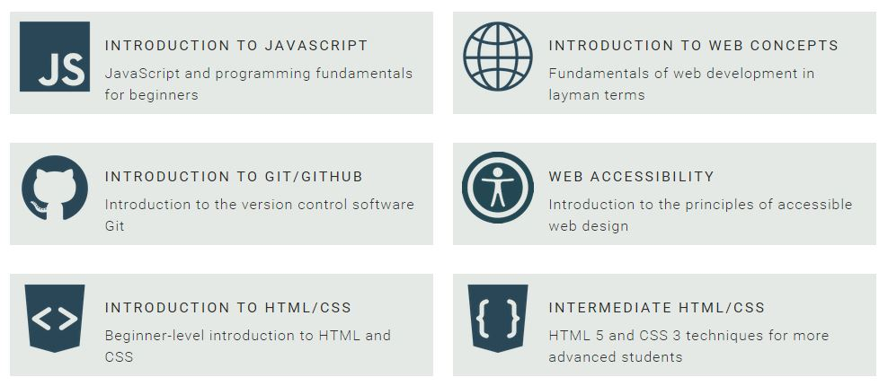
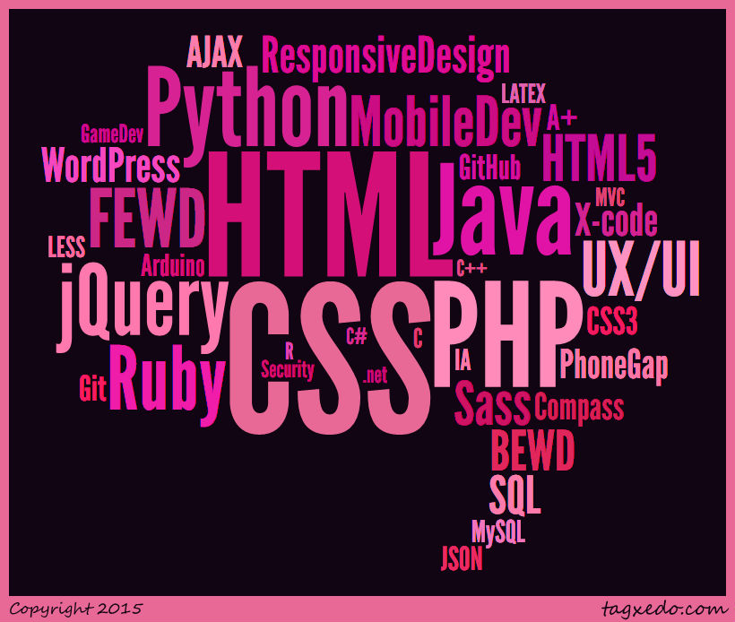

Instructor Training
Angélique Weger | @messypixels | @gdibaltimore
The Plan
- We'll talk about GDI & the Baltimore chapter
- We'll practice public speaking & instruction
- We'll talk next steps & tips for teaching with us
About Girl Develop It
What is Girl Develop It?
Girl Develop It is here to empower and assist women
interested in getting into and advancing in the tech industry
through affordable and accessible programs.
- Started in 2010 in New York City
- Now in 46 cities
- 35,000+ members nationwide
Our GDI Brand
- Friendly & Approachable
- Maintaining a judgement-free zone
- Generous with our time & knowledge
- Confidence building
About the Baltimore GDI Chapter
- Launched in January 2014
- 730+ members as of this month
- Workshops, Code & Coffee, Study Groups
- Participation in & promotion of greater tech community events
GDI Baltimore Leadership
Misty Melton
Angélique Weger
You?
Workshop organizers (paid—more on this in a bit!)
Code & Coffee volunteer organizers
Study group volunteer organizers
Fellahs
- We're women focused, but not women exclusive
- We specifically make sure men are aware of our code of conduct
- We encourage men interested in our workshops/events to bring a female friend or coworker along, too
- Mainly, we don't want to host a workshop where women are in the minority
Fun with Public Speaking
Qualities of a good speaker?
Exercise: Introductions
One by one, we'll stand up in front of the group, introduce ourselves and share a few things about ourselves.
Group provides anonymous, written feedback:
- 1 thing the speaker does really well
- 1 thing the speaker could improve on
Introduce Yourself
- Your Name
- 3 Facts About You
- How did you get to the ETC today?
Feedback Model: You do {this} well. You could improve on {this}.
Collect Feedback
- Look at your feedback cards.
- Set 1 or 2 goals for yourself.
Fun with Teaching
Qualities of a good teacher?
- Responsive & Perceptive
- Engaging & Dedicated
- Inspiring & Passionate
- Versatile & Adaptable
- Caring & Empathetic
Exercise: Pairs & Shapes
We're going to practice giving instructions.
Why we're doing this exercise
- It mimicks what we do when we teach
- Forces us to communicate with words, not visuals
- We can see if our communication was successful
Breakout Into Pairs
Extra Credit: Pair with someone you haven't met before today.
Teacher
- Pick up the handout envelope.
- Instruct the students to draw shapes matching what you see on the printout.
- No peeking!
- Ask questions.
- Decide when to stop the "lesson."
Student
- Pick up a blank sheet of paper and marker.
- Listen to the instructor and assemble the shapes.
- No peeking!
- Do not show the teacher what you are working on.
- Ask questions.
Takeaways
- What were the challenges?
- How could you tell if the student "got it"?
- What did you do when the student didn't get it?
- Who asked the most questions, student or teacher?
Teaching With Us
Step 1
Reach out and let us know you're interested.
If we don't reach out to you first!
- What topic(s) would you like to cover?
- Do you have existing slides or workshop material?
- Do you have any previous teaching or speaking experience?
Don't have slides? No worries!
GDI has a core curriculm
Beyond Core
GDI chapters also share slides and information about courses beyond the Core curriculum

Fork → Adapt → Review
Instructors are encouraged to
review, fork and personalize slides and examples.
Altered or new slide sets must be reviewed
by the workshop organizer and chapter leaders
prior to your workshop date.
Step 2
Complete the GDI instructor pre-reqs.
New Instructor Requirements
- All instructors need to TA a workshop at least 2 times before they can become an instructor.
- The exception is if you've worked closely with a leader, have strong referrals and/or have in some way already demonstrated your teaching or speaking skills.
- Complete a mock-teaching session. Present 3-5 slides to the chapter leader. Receive feedback.
Step 3
Get on the GDI event schedule!
Step 4
Getting Paid & Getting Sorted
- Girl Develop It is proud to generously compensate its leaders and instructors for the time, expertise and thoughtful planning that goes into prepping for classes and maintaining community outreach.
- Some leaders and instructors use this as bonus income. Note that you will be responsible for paying taxes on this income and GDI will send you a FORM 1099-MISC prior to tax season.
- Some leaders and instructors donate their portion back to the chapter. Note if you want to receive a tax credit for this donation, you must first receive it as income.
Workshop Costs
Based on guidelines from GDI HQ which recommend a cost of $9-14 per hour per student, we generally charge at the low end of that for our hands-on workshops and round down a bit. As a result,
- A 3-hour workshop is $25 per student
- An 8-hour workshop is $70 per student
We generally only charge for hands-on workshops. Presentations without a hands-on component, panels/discussions and other events are free.
Where Do Workshop Fees Go?
- 50% of class fees go to instructor, paid once a month via check
- 25% goes to the workshop organizer
- 15% goes to Girl Develop It HQ, which supports all chapters
- 10% goes back into to our chapter fund
This varies a bit if we have to pay for the workshop space,but
teachers always get 50% and we have generally had space donated in the past.
New Instructors
Will need to submit the following:
- New Payee Form (online)
- W9 form
- A ~1 paragraph bio
- A headshot photo
- Any social / contact info you'd like to share with event attendees
All Instructors
Will need to complete the following:
- Submit a title and abstract for the workshop
unless utilizing core curriculum - Read and understand What To Expect As A GDI Instructor
today's presentation covers most of this! - Read and understand our Code of Conduct
Instructor Bios
Instructor Expectations
- Empower students with new skills. They should have a firm grasp of the content when they leave.
- Be familiar with material, slides and examples used in your workshop.
- Provide workshop organizer/chapter leader with your slides in advance of workshop as requested.
- Make yourself an available resource to students before, during and after the class.
- Keep an eye on the Meetup event page and be prepared to answer questions that come up in the comments.
- Arrive 30-45 minutes early—get setup, greet your students!
- If teaching a series, being available to attend Code & Coffee and/or study group events between workshops.
Code of Conduct
Girl Develop It is dedicated to providing a harassment-free community and learning experience for everyone, regardless of gender, gender identity and expression, sexual orientation, disability, physical appearance, body size, race, or religion. We expect all attendees to show respect and courtesy to other attendees throughout Girl Develop It classes and events. Sexual language and imagery is not appropriate for any Girl Develop It event.
Step 5
Slide prep!
Core Slides
We like to use Reveal.js to present slides
<div class="reveal">
<!-- Any section element inside of this container is a slide -->
<div class="slides">
<section>
<h3>Welcome!</h3>
<p>(Psssst. We have snacks in the back)</p>
</section>
</div>
</div>
Dividing Slides
Basically one long HTML document. Just pay attention to the sections and you'll be fine.
<section>
<h3>Welcome!</h3>
<p>(Psssst. We have snacks in the back)</p>
</section>
<section>
<h3>Hi! I'm the second slide.</h3>
<p>Super important</p>
</section>
<section>
<h3>Another slide! Madness!</h3>
<p>I think you get the gist</p>
</section>
Setting Up Slides
- If you are starting from scratch, we can provide you with a GDI themed reveal.js template.
- If you are working from core curriculum, we will provide you with a link to the Github branch appropriate for forking.
Submitting Your Slides
- If you are starting from scratch, we need to review your slides 10 days before the workshop
- If you are working from core curriculum, we need to review your changes 5 days before the workshop
- If you're a new instructor, we will schedule a quick mock-teaching session (likely via Google Hangouts) upon receipt
- Slides need to be hosted somewhere accessible to TAs before the workshop and your students afterward
Teaching Recap
Let's do this!
- Let us know you're interested
baltimore@girldevelopit.com - Complete the pre-reqs.
- Get on the schedule.
- Get set up.
- Prep the slides.
- Teach the class!
Final Notes & Tips
Prep Tips
- Give yourself a deadline.
Finish slides well in advance. - Prepare resource links.
What will help students continue to learn? - Pack up your supplies.
Video adapters, presenter remote, rabbit's foot.
Whatever you need, and let us know if you don't have something. - Arrive early.
Put your best foot forward. - Don't rely on Wifi working.
Bring slides/exercises on a backup thumb drive. - PRACTICE. PRACTICE. PRACTICE.
Know the content like the back of your hand.
Keep an eye on flow and timing.
Teaching Tips
- Teach for the middle.
TAs can work with and focus on students who are falling behind. - Emphasize hands-on learning.
- Welcome questions and participation.
- Be humble and eliminate fear.
You don't know everything, and that's ok.
You're level of expertise should feel obtainable with a bit of hard work. - Avoid making assumptions and feigning surprise.
Coding is HARD, but it is learnable.
Use careful language. Follow Hacker School's Social Rules - It's ok not to have an answer.
Talk through your process, Google stuff. - Leave time for questions.
What To Expect During Class
- Frequent and repetitive questions.
- Varying levels of understanding, education and learning styles.
- Space limitations, noise, weather issues.
- Tech limitations—Wifi, projector, laptop.
- Unique issues with student technology—laptops, OSs, admin rights & software.
Setting the Tone
- What is an inclusive, accessible environment to you?
- What makes you feel welcome, not welcome?
- How can you make the experience fun and memorable?
How goes a great teacher make his/her students feel?
- Empowered & Confident
- Curious & Excited
- Encouraged & Valued
- Engaged & Inspired
Upcoming Events
- Front-end Development: Intro to HTML/CSS; Intermediate HTML/CSS; Intro to Sass; Responsive Web Design. Looking for teacher(s) & TAs
- Intro to UI/UX: Have one teacher; looking for a co-teacher & TAs
- Intro to Programming (using Ruby): Being developed by Natasha Jones & Vaidehi Joshi; will need TAs & some fresh eyes for slide review
- Intro to JavaScript: Looking for a teacher willing to work with some past students, plus teach a new run of this material
Your Class?
That's it!
Thank you to the ETC for hosting us tonight
Instructor Training
Angélique Weger | @messypixels | @gdibaltimore